정보통신산업기사 (2009-08-30 기출문제)
1과목: 디지털전자회로
1. 다음 중 시미트 트리거 회로에 대한 설명으로 적합한 것은?
- 주로 선형 증폭기로 사용한다.
- 계단파 발진기로 사용한다.
- 삼각파의 입력으로 정현파가 출력된다.
- 히스테리시스 특성을 갖는 비교기이다.
(정답률: 73%)

2. 다음과 같은 카르노도를 간략화한 것은?
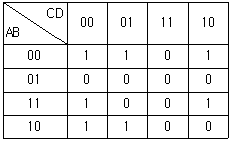
- A+BC
- B+AC
- B+CD
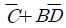
(정답률: 45%)
3. 그림의 논리회로에서 3개의 입력단자에 각각 1의 입력이 들어오면 출력 A와 B의 값은?
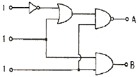
- A = 1, B = 0
- A = 1, B = 1
- A = 0, B = 0
- A = 0, B = 1
(정답률: 82%)
4. 다음은 연산 증폭기의 등가회로이다. 이 연산 증폭기의 역할은?
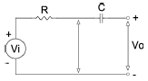
- 적분기
- 미분기
- 대수 증폭기
- 감산기
(정답률: 73%)
5. 다음 중 수정발진회로가 갖는 가장 큰 특징은?
- 잡음의 경감
- 출력의 증대
- 효율의 증대
- 발진주파수의 안정
(정답률: 77%)
6. 다음 중 D형 Latch 회로의 주 용도는?
- 10진 계수기
- 논리 연산기
- 일시 기억장치
- 정수 연산장치
(정답률: 57%)
7. 다음 중 동기식 카운터의 설명으로 옳은 것은?
- 리플 카운터라고도 한다.
- 플립-플롭의 단수와 동작 속도와는 무관하다.
- 단수의 증가함에 따라 최종단 플립-플롭에서 변화의 지연이 커진다.
- 전단의 출력이 후단의 트리거 입력이 된다.
(정답률: 46%)
8. 다음 h 파라미터 중 단위가 없는 것으로만 짝지어진 것은?
- hi와 hr
- hr와 hf
- hr와 ho
- hf와 ho
(정답률: 79%)
9. 다음 그림의 회로 용도로 적합한 것은? (단, 다이오드는 이상적이고 VR1＜VR2이다.)
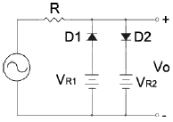
- 클리퍼
- 전압배율기
- 정류기
- 피크검출기
(정답률: 75%)
10. 다음 그림과 같은 논리회로의 기능은?
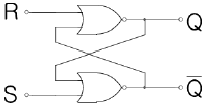
- 무안정 멀티바이브레이터
- 단안정 멀티바이브레이터
- 쌍안정 멀티바이브레이터
- 시미트 트리거
(정답률: 79%)
11. 다음 중 송신기의 주파수 체배증폭기 및 RF 전력증폭기 등으로 주로 사용되는 것은?
- A급 증폭기
- B급 증폭기
- AB급 증폭기
- C급 증폭기
(정답률: 79%)
12. 그림의 회로는 어떤 논리 동작을 하는가? (단, X1, X2 : 입력, Y : 출력이며 정논리인 경우이다.)
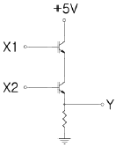
- AND
- OR
- NOR
- NAND
(정답률: 43%)
13. 다음 중 그림의 회로에서 트랜지스터 Q2의 주된 역할은? (단, Q1, Q2의 특성은 동일하다.)
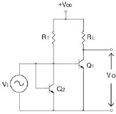
- 전류 증폭률을 크게 한다.
- 회로의 바이어스 안정을 도모 한다.
- 잡음을 감소시킨다.
- 증폭기의 대역폭을 넓힌다.
(정답률: 78%)
14. 다음 중 회로의 출력 파형으로 적합한 것은? (단, 시정수는 입력전압 Vi의 주기에 비하여 작다.)
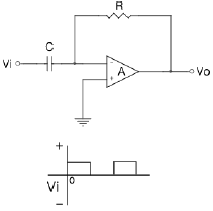
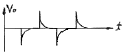
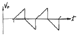
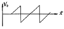
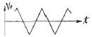
(정답률: 85%)
15. 다음 중 베이스를 기준으로 PNP 트랜지스터가 활성영역에서 동작하기 위한 바이어스가 옳은 것은? (단, B : 베이스, E : 이미터, C : 컬렉터)
- E 는 +, C 는 -
- E 는 -, C 는 +
- E 는 +, C 는 +
- E 는 -, C 는 -
(정답률: 75%)
16. 다음 FET 이상형 발진기에서 발진주파수 f[㎐]는 약 얼마인가? (단, C = 0.01[㎌], R = 10[㏀]이다.)
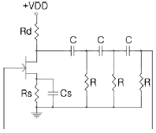
- 476
- 650
- 720
- 850
(정답률: 38%)
17. 다음 중 그림에서 발진회로로 적합한 것은?
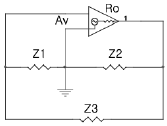
- Z1, Z2 : 유도성, Z3 : 용량성
- Z1, Z3 : 유도성, Z2 : 용량성
- Z2, Z3 : 유도성, Z1 : 용량성
- Z1, Z2Z3 : 유도성
(정답률: 73%)
18. 다음 중 트랜지스터의 스위칭 시간에서 turn-off 시간은?
- 하강시간
- 상승시간 + 지연시간
- 축적시간
- 축적시간 + 하강시간
(정답률: 72%)
19. 다음 중 TR, R 및 C 등을 이용한 멀티바이브레이터 회로에서 무안정, 단안정, 쌍안정의 구별은 무엇으로 결정되는가?
- 바이어스 전류의 크기
- 전원전압
- 콘덴서의 크기
- 결합회로 구성
(정답률: 86%)
20. 그림과 같은 논리회로의 출력 D는?
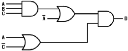
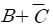
- ABC
- AB+BC
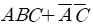
(정답률: 64%)
2과목: 정보통신기기
21. 다음 중 데이터 전송의 5단계에 포함되지 않는 것은?
- 패킷 조립
- 회로 연결
- 링크 조립
- 링크 절단
(정답률: 65%)
22. 다음 중 컬러 TV에서 NTSC 방식의 특징이 아닌 것은?
- 음성 신호는 FM 변조를 이용한다.
- 영상 신호에는 AM 변조를 이용한다.
- 주사선의 수는 525개로 비월주사 방식을 이용한다.
- 색부 반송파의 위상을 1주사선마다 반전해서 전송한다.
(정답률: 47%)
23. 다음 중 DSU의 기능에 대한 설명으로 거리가 먼 것은?
- Unipolar 신호를 Bipolar 신호로 바꾸어 준다.
- Bipolar 신호를 Unipolar 신호로 바꾸어 준다.
- 디지털 전송로 양단에 접속되어 운용된다.
- PSTN에 주로 사용된다.
(정답률: 53%)
24. 문자가 도형 등을 입력하기 위해 평면 모양으로 구성된 입력면내에 지시펜으로 위치정보를 입력할 수 있는 단말장치는?
- OCR
- OMR
- COM
- Tablet
(정답률: 75%)
25. 마이크로프로세서를 이용하여 각 단말의 채널에 시간폭을 제어하고 실제로 전송할 데이터가 있는 단말에만 시간을 할당에 주는 것은?
- 주파수분할 다중화기
- 코드분할 다중화기
- 지능형 다중화기
- 동기식 다중화기
(정답률: 28%)
26. 다음 중 MODEM에서 송신기의 구성 요소와 거리가 먼 것은?
- 스크램블러
- 검파기
- 변조기
- 대역 제한 필터
(정답률: 36%)
27. 다음 중 화상통신 서비스에서 단말 대 단말의 형태인 것은?
- 팩시밀리 통신
- CAI
- 쌍방향 CATV
- Videotex
(정답률: 35%)
28. 다음 중 인공위성의 종류가 아닌 것은?
- 랜덤위성
- 위상위성
- 자동위성
- 정지위성
(정답률: 40%)
29. 다음 정보통신 시스템에서 컴퓨터를 이용한 데이터 처리와 거리가 먼 것은?
- 주파수분할
- 시분할
- 실시간처리
- 원격일괄처리
(정답률: 69%)
30. 다음 중 전(全)전자 교환기의 통화로계 구성이 아닌 것은?
- 통화로망
- 중계선 정합부
- 가입자선 정합부
- 주변제어장치
(정답률: 74%)
31. 통신제어장치에 대한 기능으로 옳지 않은 것은?
- 회선과 컴퓨터간에 데이터의 입ㆍ출력
- 전송회선과의 전기적 인터페이스
- 수신된 데이터의 연산처리
- 전송제어, 회선감시 및 접속제어
(정답률: 39%)
32. 다음 중 팩시밀리(facsimile)의 기본 동작이 아닌 것은?
- 광전변환
- 기록변환
- 송ㆍ수신 주사
- 영상, 음성신호의 변환
(정답률: 44%)
33. 다음 중 비충격식 프린터가 아닌 것은?
- 레이저 프린터
- 잉크젯 프린터
- 도트 프린터
- 열전사 프린터
(정답률: 56%)
34. 다음 중 FM이 AM보다 충격성 잡음에 강한 이유로 가장 적합한 것은?
- 진폭제한기를 사용하기 때문이다.
- 스켈치 회로를 사용하기 때문이다.
- 대역폭이 넓기 때문이다.
- IDC 회로를 사용하기 때문이다.
(정답률: 23%)
35. 이동통신 시스템에서 다원접속기술인 CDMA의 특징이 아닌 것은?
- 가입자용량이 아날로그 셀룰러방식보다 크다.
- 주파수의 효율적 이용이 가능하다.
- 다중경로 페이딩에 강하다.
- 전력제어가 필요 없다.
(정답률: 53%)
36. 다음 중 스펙트럼 확산 변조에 대한 설명이 아닌 것은?
- 스펙트럼 확산 다원접속을 위해 FDMA방식이 사용된다.
- 대역 확산방식으로는 주파수 도약 및 직접확산 등의 방식이 있다.
- 주파수에 대한 전력 스펙트럼 밀도가 낮기 때문에 제3자가 수신하기 어렵다.
- 비록 제3자가 수신하여도 확산 변조시의 PN부호를 알지 못하면 해독이 어렵다.
(정답률: 37%)
37. 하나의 고속통신 회선에 다수의 부채널을 접속하기 위한 통신 장비로 다수의 단말 회선을 소수의 회선으로 통합화하는 기기는?
- 집중화기
- 다중화기
- 자동응답기
- 호출기
(정답률: 28%)
38. 주파수분할 다중화(FDM)에서 다른 대역으로부터 신호의 간섭을 막아주기 위한 완충 대역은?
- 보호대역
- 데이터대역
- 유도대역
- 감시대역
(정답률: 50%)
39. 다음 중 LAN의 통신망 구조가 아닌 것은?
- 버스형
- 링형
- 스타형
- 종형
(정답률: 46%)
40. 다음 중 위성을 이용한 위치, 속도 및 시진 측정 서비스를 제공하는 시스템은?
- DBS(Direct Broadcasting System)
- GPS(Global Positioning System)
- TRS(Trunked Radio System)
- VRS(Video Response System)
(정답률: 70%)
3과목: 정보전송개론
41. 대표적인 랜덤 에러 정정부호로 복수개의 에러(Burst Error)를 정정하는데 가장 적합한 부호는?
- 해밍 부호
- 리드솔로몬 부호
- 컨버루션 부호
- 순환중복검사 부호
(정답률: 50%)
42. 다음 중 정합필터에 대한 설명으로 적합하지 않은 것은?
- 최적 임계치는 입력신호 에너지의 반과 같다.
- 정합필터는 본질적으로 동기 검파기이다.
- 신호성분을 강조하고 잡음성분을 억제한다.
- 곱셈기와 미분기로 구현할 수 있다.
(정답률: 40%)
43. 다음 중 대역폭이 가장 넓은 전송매체는?
- CCP 케이블
- 동축 케이블
- STP 케이블
- UTP 케이블
(정답률: 50%)
44. 다음 중 양자화 잡음이 나타나지 않는 변조방식은?
- PCM
- ADPCM
- DM
- FDM
(정답률: 10%)
45. PCM 방식에서 표본화 주파수가 8[㎑] 이면 표본화 주기는 몇 [㎲]인가?
- 12[㎲]
- 85[㎲]
- 100[㎲]
- 125[㎲]
(정답률: 67%)
46. HDLC에서 비트스터핑(bit stuffing)을 행하는 목적은?
- 데이터의 투명도 보장
- 주소부 구분
- 데이터 프레임의 순서정리
- 각종 프레임의 구분
(정답률: 50%)
47. 다음 중 정지-대기(stop-and-wait) ARQ의 특징에 대한 설명으로 적합하지 않은 것은?
- 착오 검출능력이 우수한 부호를 사용해야 한다.
- 전이중(full duplex) 모드이다.
- 구현방법이 단순하다.
- 응답 대기시간으로 인해 전송효율이 떨어진다.
(정답률: 42%)
48. OSI 7계층 참조모델에서 HDLC 프로토콜은 어느 계층과 관련이 있는가?
- 데이터링크 계층
- 네트워크 계층
- 전송 계층
- 세션 계층
(정답률: 37%)
49. 다음 중 아날로그 신호의 디지털화 과정의 순서로 가장 적합한 것은?
- 부호화 → 표본화 → 양자화 → 대역제한 필터링
- 대역제한 필터링 → 표본화 → 양자화 → 부호화
- 표본화 → 대역제한 필터링 → 양자화 → 부호화
- 대역제한 필터링 → 표본화 → 부호화 → 양자화
(정답률: 34%)
50. 다음 중 HDLC 링크 구성 방식에 따른 동작 모드에 속하지 않는 것은?
- 선택 거절 모드(SRM)
- 비동기 응답 모드(ARM)
- 정규 응답 모드(NRM)
- 비동기 균형 모드(ABM)
(정답률: 53%)
51. 8진 PSK 변조방식에서 반송파간의 위상차는?
- 45도
- 90도
- 180도
- 360
(정답률: 48%)
52. 다음 중 단일모드 광섬유(single mode fiber) 케이블에 대한 설명으로 적합하지 않은 것은?
- 색분산이 존재한다.
- 모드간 간섭이 없다.
- 제조 및 접속이 어렵다.
- 모드가 한 개밖에 존재하지 않아 고속, 대용량 전송이 어렵다.
(정답률: 65%)
53. 다음 중 수신한 8비트 PCM 데이터를 순시 진폭 값으로 변환하는 과정은?
- 부호화
- 복호화
- 양자화
- 표본화
(정답률: 44%)
54. 수신된 마이크로파를 검파하여 원 신호로 만든 다음 증폭한 후 다시 마이크로파로 변조하여 전송하는 중계방식은?
- 검파 중계방식
- 헤테로다인 중계방식
- 직접 중계방식
- 무급전 중계방식
(정답률: 31%)
55. 전송하려는 부호어들의 최소 해밍 거리가 7일 때, 수신기 정정할 수 있는 최대 오류의 수는 얼마인가?
- 1
- 2
- 3
- 4
(정답률: 56%)
56. 다음 중 정보 신호에 따라 반송파의 진폭과 위상을 변조시키는 변조방식은?
- QAM
- ASK
- FSK
- PSK
(정답률: 73%)
57. OSI 7 계층에서 데이터 형식 코드변환, 암호화 등의 역할을 하는 계층은?
- 응용계층
- 표현계층
- 네트워크 계층
- 데이터 링크 계층
(정답률: 60%)
58. 다음 중 동선케이블 전송선로와 비교하여 광 전송선로의 특징이 아닌 것은?
- 경량 및 저손실
- 대용량 전송
- 접속이 쉬움
- 외부 유도잡음이 적음
(정답률: 60%)
59. 다음 중 ADPCM에 대한 설명으로 가장 적합한 것은?
- 양자화기만 적응형으로 만든다.
- 예측기만 적응형으로 만든다.
- 양자화기 및 예측기 모두 적응형으로 만든다.
- 양자화기 및 예측기 모드 비적응형으로 만든다.
(정답률: 56%)
60. 다음 중 상호 변조 왜곡의 방지대책으로 적합하지 않은 것은?
- 다중화 방식을 TDM에서 FDM으로 변경한다.
- 필터를 이용하여 통과대역 밖의 신호를 잘라낸다.
- 입력신호의 크기를 너무 크게 하지 않는다.
- 송수신장치를 선형영역에서 동작시킨다.
(정답률: 32%)
4과목: 전자계산기일반 및 정보설비기준
61. 서브루틴의 호출에 이용되는 자료구조는?
- 큐(queue)
- 스택(stack)
- 배열(array)
- 리스트(list)
(정답률: 50%)
62. 10진수 -800을 팩(packed) 10진수 형식으로 바꾼 것은?
- 800D
- 800C
- -800
- +800
(정답률: 39%)
63. ROM과 RAM의 차이점을 설명한 것으로 틀린 것은?
- RAM은 휘발성 메모리라고 한다.
- 어느 ROM이나 한 번 쓰면 지울 수 없다.
- RAM은 동적 RAM과 정적 RAM으로 나눌 수 있다.
- ROM의 종류에는 EPROM, EEPROM, PROM 등이 있다.
(정답률: 62%)
64. 10진수 -13.625를 IEEE 754 형태로 옳게 표현한 것은? (단, 부호 : 1비트, 지수 : 8비트, 가수 : 23 비트이다.)
- 0 0000 1101 1011 0100 0000 0000 0000 0000
- 0 1000 0100 1011 0100 0000 0000 0000 0000
- 1 0000 1101 1011 0100 0000 0000 0000 0000
- 1 1000 0100 1011 0100 0000 0000 0000 0000
(정답률: 50%)
65. 다음 불대수 공식 중 틀린 것은?
- X + 0 = 0
- X + X = X
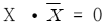
- XㆍX=X
(정답률: 50%)
66. 다음 중 어떤 명령이 수행되기 전에 가장 우선적으로 행하여야 하는 마이크로 오퍼레이션은?
- PC ← PC+1
- MAR ← PC
- MBR ← M
- PC ← 0
(정답률: 56%)
67. 다음 중 프로그램 언어의 조건으로 맞지 않는 것은?
- 다양한 응용 문제를 해결 할 수 있어야 한다.
- 명령문이 통일성 있고 단순, 명료해야 한다.
- 가능한 외부적인 지원은 차단하고, 많은 내부적 지원이 가능해야 한다.
- 언어의 확장성이 좋으며 구조가 간단하고 분명해야 한다.
(정답률: 63%)
68. 다음 중 n개의 입력으로 최대 2n개의 출력을 나타내는 조합논리회로로서, 출력 중에서 하나는 1이 되고, 나머지 출력은 0이 되는 것은?
- 인코더
- 디코더
- 멀티플렉서
- 디멀티플렉서
(정답률: 40%)
69. 제어의 흐름을 의미하는 것으로 프로세스에서 실행의 개념만을 분리한 것이며, 프로세스의 구성을 제어의 흐름 부분과 실행환경 부분으로 나눌 때, 프로세스의 실행 부분을 담당함으로써 실행의 기본단위가 되는 것은?
- Working Set
- PCB
- Thread
- Segmentation
(정답률: 41%)
70. 입출력장치와 마이크로프로세서 사이의 접속장치(Interface)에서 악수하기(Handshaking)의 의미로 가장 적합한 것은?
- CPU의 병렬데이터를 I/O장치에 맞추어 직렬 데이터로 변환하기
- CPU와 I/O 자이 사이의 제어신호 교환하기
- I/O장치의 전압높이를 CPU에 맞추기
- CPU가 사용하지 않는 버스를 I/O 장치에서 제어하기
(정답률: 22%)
71. 다음 중 정보통신공사업자만 시공할 수 있는 공사는?
- 실험국의 무선설비설치공사
- 간이무선국의 무선설비설치공사
- 건축물에 설치되는 5회선 이하의 구내통신선로설비공사
- 허브의 증설을 수반하는 10회선의 근거리통신망 선로의 증설공사
(정답률: 44%)
72. 대통령령이 정하는 구내에 전기통신설비를 설치하거나 이를 이용하여 그 구내에서 전기통신역무를 제공하는 사업은?
- 기간통신사업
- 별정통신사업
- 부가통신사업
- 일반통신사업
(정답률: 36%)
73. 다음 ( ) 안에 들어갈 내용으로 가장 적절한 것은?
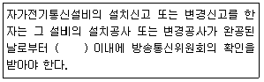
- 3일
- 5일
- 7일
- 9일
(정답률: 50%)
74. 지식경제부장관이 전기통신기술의 진흥을 위하여 수립하는 시행계획에 포함되어야 하는 사항이 아닌 것은?
- 전기통신의 질서유지에 관한 사항
- 전기통신기술의 표준화에 관한 사항
- 전기통신기술의 연구ㆍ개발에 관한 사항
- 전기통신기술의 국제협력에 관한 사항
(정답률: 17%)
75. 전기통신을 행하기 위하여 계통적ㆍ유기적으로 연결ㆍ구성된 전기통신설비의 집합체를 말하는 것은?
- 정보통신망
- 전기통신망
- 통신설비망
- 정보통신설비망
(정답률: 17%)
76. 정보통신공사 발주자는 누구에게 공사의 설계를 발주 받아야 하는 가?
- 공사업자
- 감리원자
- 용역업자
- 하도급업자
(정답률: 44%)
77. 다음 중 보편적 역무의 내용에 해당하지 않는 것은?
- 유선전화 서비스
- 긴급통신용 전화 서비스
- 유지보수를 위한 전화 서비스
- 장애인 등에 대한 요금감면 전화 서비스
(정답률: 50%)
78. 다음 중 전기통신역무에 관한 이용약관의 신고시 이용약관에 포함되는 사항이 아닌 것은?
- 전기통신역무의 종류 및 내용
- 전기통신역무를 제공하는 시간
- 수수료ㆍ실비를 포함한 전기통신역무의 요금
- 전기통신사업자 및 그 이용자의 책임에 관한 사항
(정답률: 31%)
79. 다음 중 정보통신공사업의 등록을 할 수 있는 자는?
- 파산선고를 받고 복권되지 아니한 자
- 정보통신공사업법이 규정에 위반하여 벌금형의 선고를 받고 2년을 경과하지 아니한 자
- 정보통신공사업법의 규정에 의하여 등록이 취소된 후 2년을 경과하지 아니한 자
- 정보통신공사업법의 규정에 위반하여 금고의 실형을 선고 받고 그 집행이 종료된 후 4년을 경과한 자
(정답률: 53%)
80. 다음 ( ) 안에 들어갈 내용으로 가장 적합한 것은?
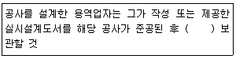
- 3년간
- 5년간
- 7년간
- 하자담보책임기간까지
(정답률: 47%)